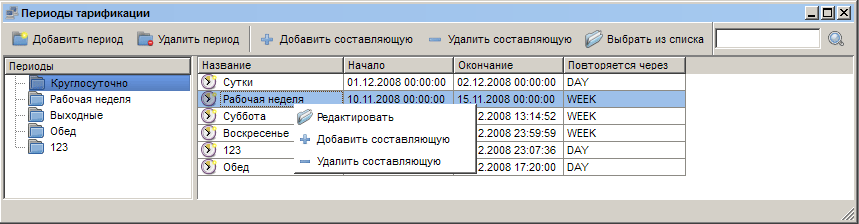
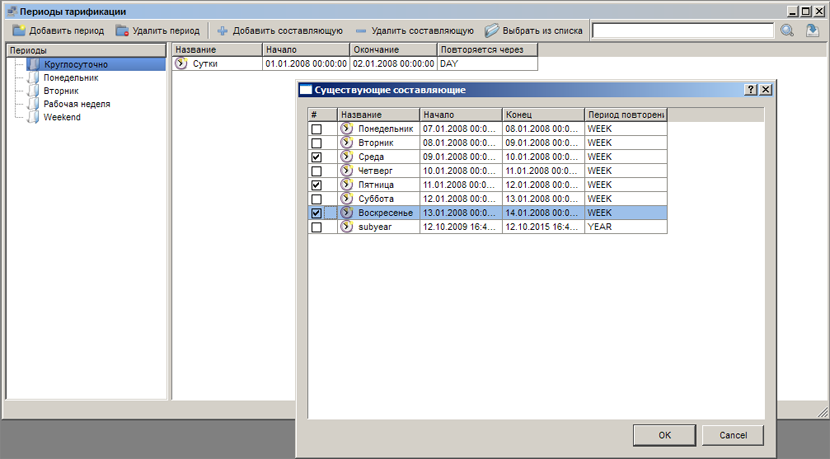
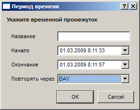

|
Интерфейс и логика |
Top Previous Next |
|
Открыть окно «Периоды тарификации» можно одним из следующих способов:
– кнопкой на панели; – через меню «Главное меню» → «Периоды тарификации»;
Главное окно раздела составляют панель инструментов с кнопками «Добавить период», «Удалить период», «Добавить составляющую», «Удалить составляющую» и «Выбор из списка», а также список периодов (слева) и таблица составляющих (справа).

При добавлении периода необходимо лишь указать его название.
Если в списке выбран период, то кнопка «Выбор из списка» выведет список всех составляющих со всех периодов, которые не включены в данный период. Если все доступные составляющие включены в период, список будет пустым.
ExpertBilling позволяет сформировать новый период тарификации из уже существующих в системе значений.
 Формирование расчётного периода из существуующих значений
Данная возможность интересна тем, что позволяет вначале сформировать периоды тарификации, которые описывают выходные и другие значимые дни и потом несколькими кликами мыши создать на их основе основные расчётные периоды, которые будут участвовать в тарификации и разграничении доступа.
Окно «Редактирование периода»
Данное окно открывается при выборе или создании составляющей периода тарификации (двойной щелчок по названию составляющей, пункт «Редактировать» в контекстном меню, кнопка «Добавить составляющую»).

Здесь задается точное время старта и окончания данной составляющей (поля «Начало» и «Окончание»), необязательное название составляющей («Название») и период повторения (выпадающий список «Повторять через»). Это можно быть полезно, если в одном из периодов тарификации вы прописываете все праздники или какие-то особенные дни и потом добавляете их в нужные расчётные периоды без дублирования данных. This help file was created with an unregistered evaluation copy of Help & Manual. © EC Software. All rights reserved. This message will not appear if you compile this help file with the registered version of Help & Manual. |